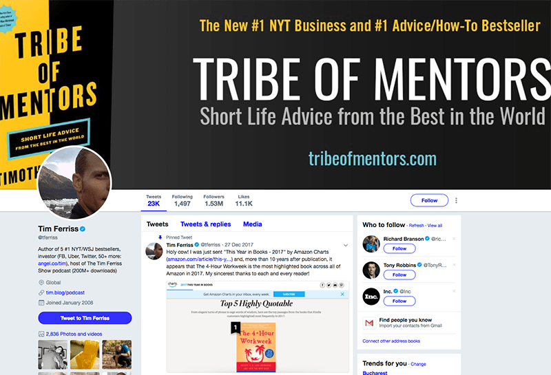

The beauty of social media is that you can go from anonymity to stardom in the span of a few days. But attaining social media success is easier said than done. You have to plan and execute strategies to keep your audience engaged every single moment.
With that said, there are brands that have discovered the winning strategy for their values, personality, and voice. They know what their followers want, and deliver it over and over again. These influential brands shine on Facebook and Twitter and can teach you a thing or two about standing out on social media. Learn social media marketing from the best of the best.
5 Influential Brands on Facebook

Coca-Cola (Over 107M fans)
Coca-Cola is unique in that unlike most brands that have pages on Facebook, it does not keep all of its products under one page. Instead, it has individual pages for most of its products; there is one for Fanta, Diet Coke, and even Dasani. It splits up individual brands to get more fans.
The lesson taught by this very popular company is that it’s important to have different pages for each product so that clients and prospects get to appreciate them individually.

RedBull (Over 47M fans)
RedBull is one of the best companies on Facebook in terms of branding. Its unique feature is that it hardly ever highlights its products. You will not find RedBull merchandise strewn all over its timeline. Instead, the company associates itself with extreme sports that seem to go with its famous tagline, “RedBull gives you wings.”
When marketing your brand or business on Facebook, follow Redbull’s example. Don’t be aggressive, be smart. Avoid promoting your products and services all the time and simply share content your audience loves.
Disney (51M fans)
Disney is one of the brands that reign on Facebook. It stands out due to the fact that it uses popular images to communicate and interact with its followers. The company showcases the same characters that feature in its films and TV programs: Mickey Mouse, Snow White, Rapunzel, Winnie the Pooh, and many others.
To increase engagement on Facebook, display products and services your followers are familiar with. They will develop a sense of belonging to your organization.
MTV (48M fans)
In October 2015, MTV took part in sensitizing people on the United States National Coming Out Day. This was outstanding because, in most cases, brands keep off sensitive matters. However, the way in which MTV handled the matter saw many of its fans lauding it. In addition, MTV continues to carve out a niche for itself as a pop culture icon.
The brand concentrates on its fans and satisfies their needs. If you want your brand to be as popular as MTV, know what your followers want and deliver it.
Starbucks (37 million fans)
Oh, the smell of freshly brewing coffee! What’s not to love about it? Starbucks epitomizes coffee, and people love coffee! No wonder the brand has more than 36 million fans on Facebook. Its popularity lies in its preference for combining text with images. It also holds wonderful promotions for fans and offers free recipes.
If you learn nothing else from Starbucks, learn that fans love freebies.
5 Influential Brands on Twitter

@tferriss (1.53M followers)
Tim Ferris is the author of several bestseller books for entrepreneurs, but you probably know him from his famous podcast – The Tim Ferris Show, the first business-interview podcast to pass 200 million downloads. Tim offers life coach advice and startup strategies to help young entrepreneurs build their businesses, be healthier, stronger and become better at … life in general.
He frequently shares inspirational tweets which are widely shared. He also covers various topics, from entrepreneurship and investment to weight loss and fitness. Borrow a leaf from him and start tweeting about valuable, interesting, and relevant things.
@NatGeo(22.3M followers)
Despite being 127 years old, NatGeo ranks highly on a very modern marketing platform. It has some of the best content online. It dishes out interesting tweets every day that are a joy to read. One day it will tell followers about how geckos change the angles of their toe hairs to turn their sticky toes on and off, and another day it will post dramatic images of wildfires.
Nat Geo understands the importance of visual storytelling. So, what can you learn from Nat Geo? That rich content is everything!
@Arsenal(13.4M followers)
Why is Arsenal so popular? Because it connects players with fans. The football club engages with its supporters in a personal way. Arsenal is so popular it has more fans in Tottenham and Chelsea than the football clubs. The account is followed by fans, bloggers and journalists. It posts football content regularly keeping followers wanting more.
Arsenal is all about entertaining fans, and you should follow suit if you want to attain social media success.
@WWE (10.1M followers)
WWE, despite being an old player in the entertainment industry, has a massive fan base on Twitter. The dominant aspect about WWE is that after its shows, fans flock to its page to continue the conversation there. As a result, the fun never ends.
Adapt WWE’s strategy and allow your followers to participate in your brand’s activities. Let them voice their opinions freely and offer valuable feedback.
@NASA(28.9M followers)
The master of outer space also ranks highly on Twitter. NASA maximizes its influence by engaging influencers. For example, it tweeted a happy birthday message to Leonard Nimoy of Star Trek. It also reached out to Justin Beiber, who has at least 36 million followers on the platform. It explained that engaging an influencer like Beiber was critical because by forming a link with his young followers, it could influence them to study STEM careers.
This is one of the biggest lessons that social media marketers should learn. Instead of trying to succeed alone, reach out to related influencers to form beneficial partnerships.
These influential brands have attained success on two of the largest social media platforms in existence, but they didn’t do it by chance. Each one of them applies a unique strategy to capture followers. As if this is not enough, the brands apply interesting tactics to keep their followers engaged. If you are looking to build your brand, emulate these tactics and modify them to suit your target audience.
Nilda says
I feel you guys did well to point out that the fact that coke has branched out to different pages for every single beverage of theirs. If I want to visit fanta’s page, I don’t have to go to coke’s page and then scroll to find Fanta. I can just visit Fanta instead. This makes is so much easier for users and fans
Logan says
Agreed
Coy says
Associating your brand with things fans love(like sports) is a great way to market your brand instead of just boasting about your own products. I guess this trend has started to develop and I have noticed it is gaining popularity
Brooke says
I have been a follower of MTV for a while now. Those guys are pretty underestimated in terms of marketing. I’m glad you guys used the example of MTV as one of the 5 examples of popular Facebook brands!
Logan says
They deserved to be on this list
Osvaldo says
I can’t compare my online t shirt selling business with Starbucks of course. but I did notice that once I started providing incentives(buy 1 get 1 free e.g.) my customers and followers increased significantly
Logan says
Works like a charm
Tanika says
If you’re the inspiration that Tim Ferris is, Twitter is your place to share inspirational quotes. There’s nothing an audience loves more than inspirational quotes.
Logan says
Exactly
Bradly says
I interact personally with my customers and it just simply tempts them to return to my shop. Personal interaction to me is THE most important strategy to get followers. It shows your followers that they are important
Gerardo says
I never knew what I just read about NASA. Great info shared here. Reaching out to influencers to in order to appeal to the Influencer’s followers too. What a clever way to increase following
Logan says
Thank you
Melody says
Having different pages for different brands is great strategy. However, this is only applicable when having such huge base of fans. When having smaller company and smaller fan base having different pages wouldn’t make sense.
Stefanie says
Redbull is doing awesome stuff with their brand. Even when they don’t mention their product, when sharing their content you always have it on your mind. Their strategy to be associated with extreme sports is something they have been building for years and they have been very good at it.
Shanae says
What they all have in common is that they are not aggressively promoting what is making them money. Through storytelling and experiences, they are getting you interested in their content and their brand. This is something that would be recommended for everyone who wants to build successful brands on the long term.
Orange County says
Only God and the ones who are paying all of that, knows how many people and agencies are working to reach those goals and numbers. I know that’s possible to reach those starts, but very hard as an individual. Never mind, thanks for the nice and clean article 🙂
Alma says
I like articles like this particular one because they are so simple and general. Why those companies have so much success with social media does request deeper analysis, but the general conclusions can help us to visualize our strategy and to start acting.
Osman Hadun says
We can all learn from this article, all we need is to read it couple of times and to google a bit and we’ll be able to improve our marketing ideas and to develop to something serious